FOTOGRAFIE · MATERIÁLY · MODEL · OPRAVY
Od fotografie k domu.
Celý postup na jednom místě.
Kompletní vývoj čp. 261: originál a kolorování, registrace otvorů, ostění, materiály, kontrola chyb a poslední oprava vstupu a svodu. Model zobrazuje aktuální v10; starší etapy zůstávají dostupné v porovnáních.
Načítání modelu…
PrůčelíTažení: otočit · kolečko: přiblížit
Počet a rozměry schodů jsou pracovní hypotézou. Tlačítko Bez 3D okapů umožňuje ověřit, že na zdi nezůstává druhý fotografovaný svod.
V9 → V10
Původní vystouplý lem je zpět
Vystouplý obloukový lem je převzat přímo z v8, včetně viditelného tvaru a UV. Uzavřený vikýř, napojení do střechy i opravené schody z v9 zůstávají beze změny.
OPRAVA GEOMETRIE · V8 → V9
Uzavřený vikýř a stabilní spodek schodů.
Původní plášť končil po 0,90 m, vzadu zůstal otevřený a mezi díly čela byly mezery. Opravený plášť pokračuje až do průniku se sklonem střechy. Souvislé čelo a uzavřené ostění odstranily průhledy kolem obloukového okna. Skryté napojení je pracovní konstrukční hypotéza, nikoli archivně změřený detail.
Tři překrývající se bloky schodů nahradilo jedno uzavřené stupňovité těleso. Spodní plocha leží 4,5 cm pod podstavou domu, takže se plochy nepřekrývají v jedné rovině a při otáčení neproblikávají. Nášlapy, počet stupňů a barevnost zůstaly zachované. Vložené textury jsou bajtově shodné s v8.
Zadní část pokračuje do střechy
Boční profil a napojení na střechu
Spodek schodů bez překrytých ploch
MATERIÁLOVÁ REVIZE · V7 → V8
Tmavší omítka, čitelnější povrch.
FRONT byl světlejší a žlutější než kolorovaná fotografie. Maskovaná korekce v lineárním RGB přibližuje minerální povrchy této referenci; pixely oken, dveří a soklu zůstávají chráněné. Drsnost materiálu omítky je zvýšena na 0,96. Geometrie, UV, trhliny i stávající poškození zůstaly zachované.
Prohlížeč nyní používá plnou registrovanou fasádu 2048 × 2048 místo webové kopie 1024 px: čtyřnásobný počet texelů a anizotropní filtrování při šikmém pohledu. Původní FRONT má 1306 × 1204; zachováváme dostupnou kresbu, nevytváříme nové historické detaily. Expozice se snížila z 1,0 na 0,8 a lze ji přepnout výše.
Obě strany porovnání mají shodnou kameru a expozici 0,8, takže ukazují změnu materiálu. Barvy zůstávají pracovní interpretací.
Průčelí
Okno a omítka
Nároží
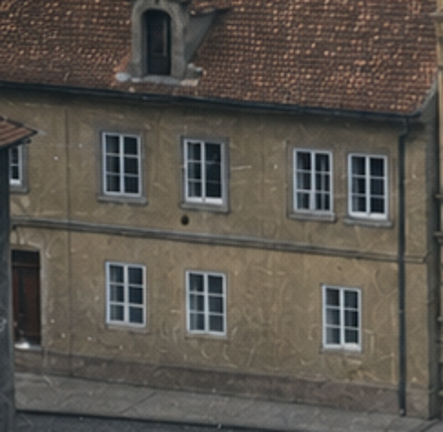
Výřez kolorované referenční fotografie.
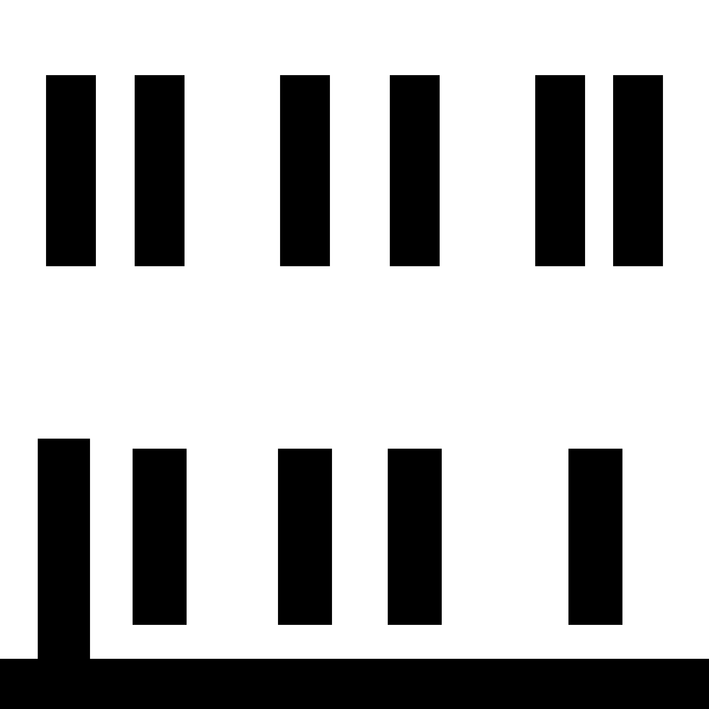
Bílá: upravené minerální plochy. Černá: chráněné pixely.
OD ORIGINÁLU K BARVĚ
Původní fotografie / kolorovaná fotografie
Táhněte přímo přes obraz nebo použijte posuvník pod ním. Vlevo je skutečný černobílý archivní snímek, vpravo jeho uložená kolorovaná verze. Čp. 261 je menší dům vlevo od prostředního zdobeného domu.
Stejný zdrojový záběr, společný rám. Kolorovaná verze má jiné rozlišení a místní generativní změny; nejde o pixelově totožné podklady ani o historické potvrzení barev. Obrazy se zobrazují bez deformace proporcí. Pro ČB fotografii proti 3D modelu je nejprve nutné kalibrovat kameru a výřez; běžný pohled z prohlížeče není přesně shodný.
PRVNÍ MATERIÁLOVÁ REVIZE · V5 → V6
Okna, ostění, římsy a střecha
Původní porovnání zůstávají zachovaná. Ukazují vývoj materiálů v5 → v6; revize v7 níže opravuje ještě vstup a svod.
Okno a hloubka ostění
Nové ostění má vlastní plochy a materiál. Sklo je rozdělené do tabulek; fotografované příčky se nezdvojují s geometrií.
Římsa bez přerušeného obrazu
Předem registrovaná mapa drží návaznost čelních polygonů. Spodní a kolmé plochy používají samostatné UV.
Dveře a členění přízemí
Revize přebírá čtyři okna a levé dveře z FRONTu. Část přízemí na originálu je zakrytá a zůstává interpretací.
Dva vikýře a vlastní střešní materiál
Přibyl drobný horní větrací vikýř. Poloha komína respektuje původní fotografii. Krytina je generovaná materiálová hypotéza.
Nároží a boční stěna
Boční omítka má vlastní plošné mapování bez přetažených oken z čelní fotografie. Otvory na neviděných stěnách nejsou doložené.
Zachované stopy na omítce
Mapa přebírá poškození z barevné reference. Její jemné detaily nejsou samy o sobě historickým důkazem; rozhodující zůstává originál.
STEJNÉ KAMERY A OSVĚTLENÍ
Předchozí v6 / opravená v7
OD PRAMENE K MODELU
Co se při tvorbě skutečně mění.
Nejprve fotografie.
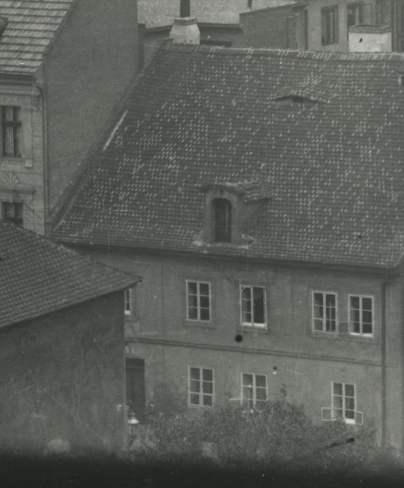
Vlevo od čp. 262: šest okenních os v patře, nízký dům se strmou střechou a svislým vikýřem. Část přízemí zakrývá sousední střecha a vegetace. Neviditelné detaily nejsou přímým důkazem.
Každý otvor má vlastní hrany.
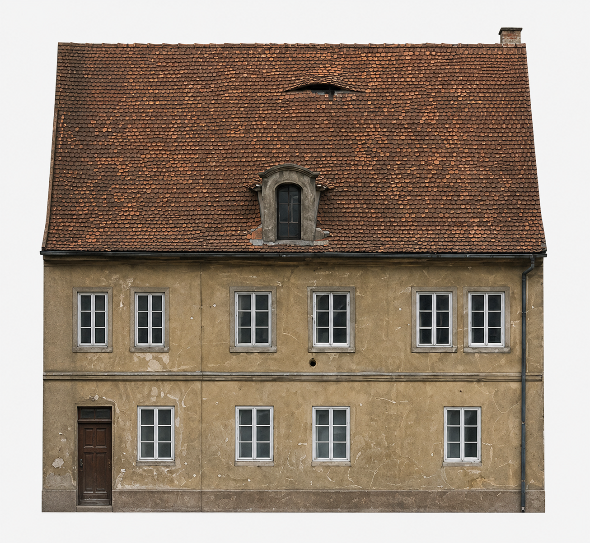
FRONT se přiřazuje podle levých a pravých hran oken a výšek podlaží. Je to odvozená barevná reference, nikoli přesná ortofotografie. Komín vpravo na FRONTu odporuje fotografii; model zachovává levou polohu.
Čelní obraz nestačí.
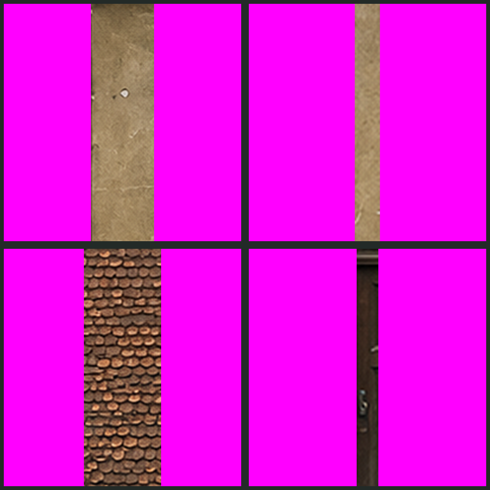
Na kolmých plochách by čelní projekce zkolabovala do čáry. Každá plocha dostává dvourozměrné mapování v metrech. Fialová označuje místa pro generativní doplnění; zbytek chrání uložená maska.
Nový materiál, chráněné pixely.
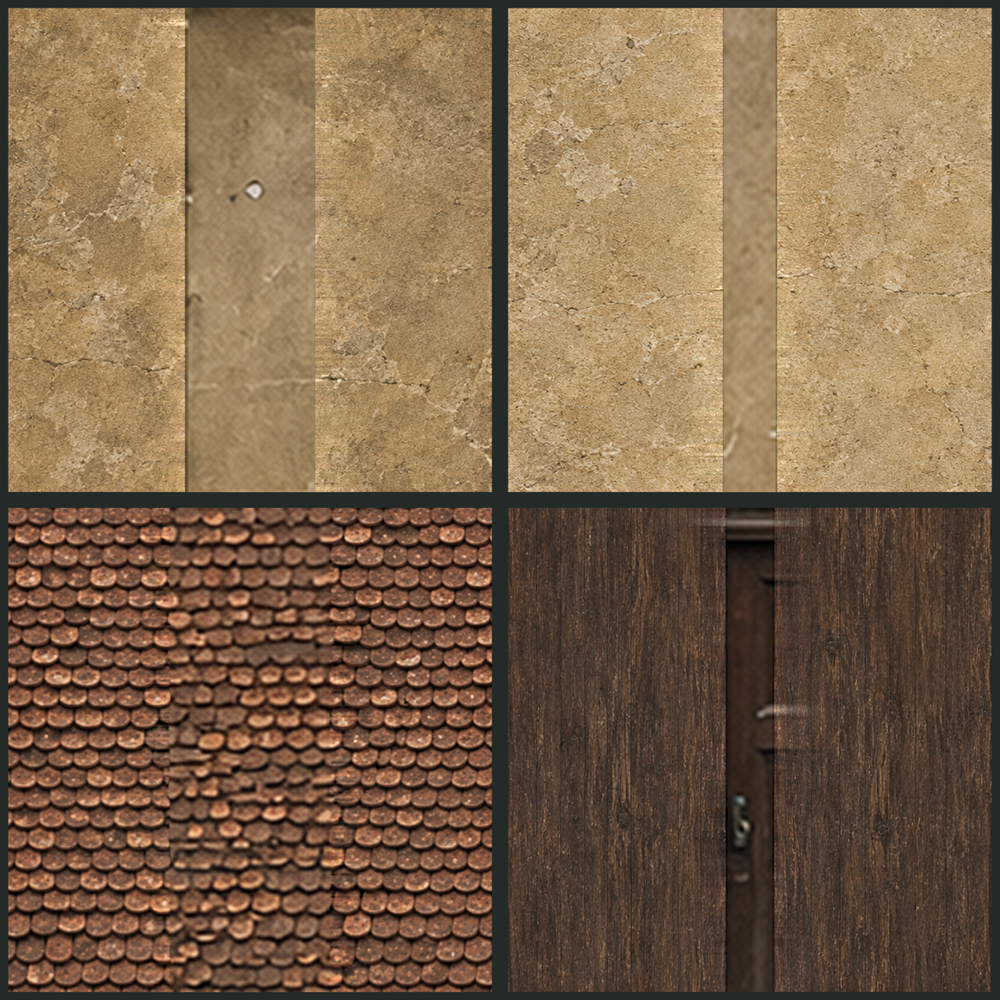
Vestavěný obrazový model doplnil omítku, minerální ostění, krytinu a dřevo. Přes masku se vložily jen nové oblasti, u jejich hran se upravila barevná návaznost. Změna mimo masku: přesně 0 pixelových hodnot.
Geometrie také potřebovala opravu.
Přízemí. Původní model měl pět oken a dveře. Revize obsahuje čtyři okna a levé dveře podle FRONTu a viditelné části fotografie. Zakrytá část přízemí zůstává pracovní interpretací.
Střecha. Doplněn je horní nízký větrací vikýř viditelný nad svislým vikýřem. Drobné profily a neviditelné konstrukce zůstávají odhadem.
Boční a zadní plochy. Nedoložené otvory nejsou vymyšlené. Model je zde uzavřen provizorními plochami s materiálovým doplněním.
CO ODHALILA KONTROLA
Dva mezikroky, které neprošly.
Zdvojené příčky a přerušená římsa
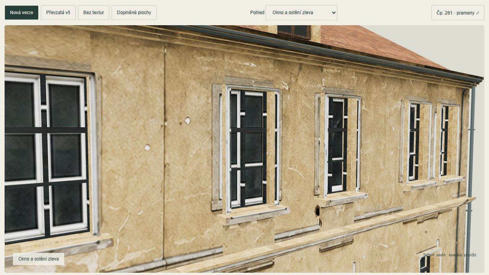
Různě velké polygony interpolovaly nelineární souřadnice různě. Řešením je jedna předem registrovaná mapa a lineární souřadnice všech čelních ploch. Skleněné tabulky jsou potom vyříznuté samostatně, aby se fotografované příčky nezdvojovaly s geometrií rámu.
Zobrazit registraci všech otvorů ↗Kontextový atlas není opakovatelná dlaždice
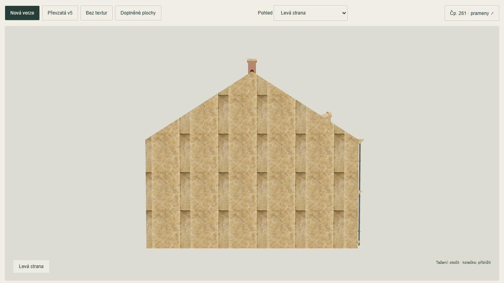
Při opakování celého terče se opakovaly i chráněné pásy. Pro nepozorované velké stěny se proto z čistě generovaných oblastí vytvořila větší materiálová mapa: návaznost hran a plynulé překryvy posunutých výřezů omezily viditelné opakování. Původní chráněné pixely zůstaly beze změny.
Parametry dokončení textury ↗Krytina potřebovala vlastní materiál.
První atlas nestačil pro velkou střechu. Druhá obrazová editace vytvořila samostatný materiál tašek podle výřezu reference. Jde o novou materiálovou hypotézu; původní fotografie zůstává nezměněná.
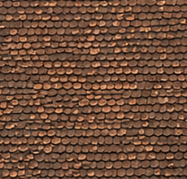
Materiálový podklad
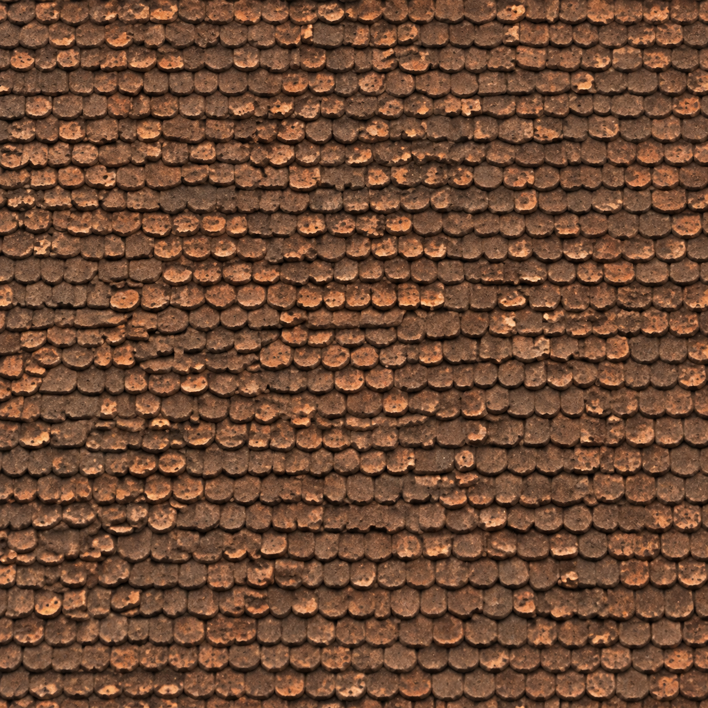
Samostatná opakovatelná textura
Přesné zadání editace ↗Co bylo špatně a jak je to opravené
Dveře, práh, schody
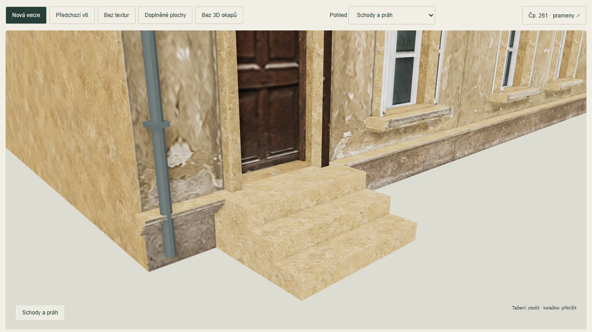
Fotografované schody byly součástí svislé dveřní výplně a soklová římsa procházela vstupem. Nově má dveřní křídlo vlastní výřez bez schodů, spodní hranu ve výšce prahu a samostatné tři stupně. Soklová římsa je přerušená. Zvolená výška stupně 16 cm a nášlap 28 cm nejsou historicky změřené.
Svod oddělený od omítky
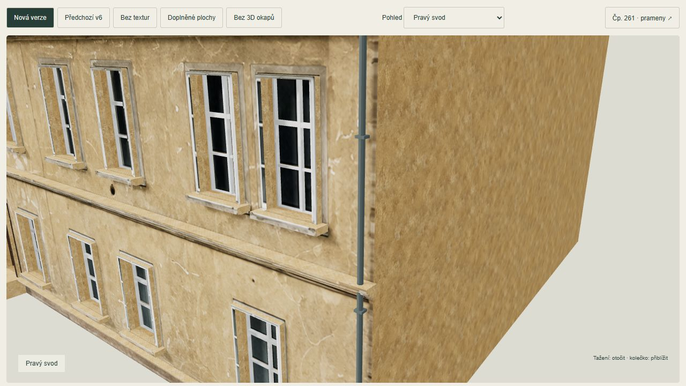
Vestavěný obrazový model odstranil fotografovaný svod, držáky i jeho tmavé stopy. Do textury byla přes masku vložena pouze pravá úzká oblast. Okna, dveře a ostatní poškození mimo masku jsou pixelově beze změny. Geometrie okapů zůstala zachovaná.
Před editací
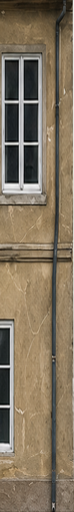
Po maskovaném složení
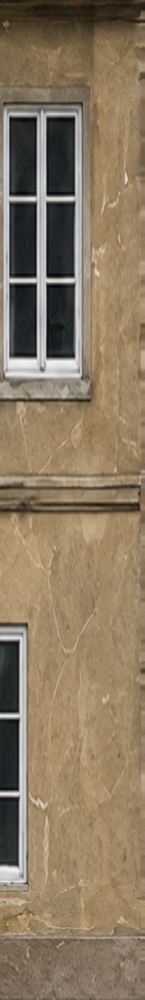
Maska · Skutečný výstup generátoru · Přesné zadání · Kontrola ochrany pixelů
Kontrola přidaná pro další domy
U všech vstupů se kontroluje spodní hrana dveří, práh, schody a průběh soklu v textuře i clay. U samostatných 3D svodů, držáků, kabelů a rámů se ověřuje, zda jejich druhý obraz nebo fotografický stín nezůstal na zdi. Pravidlo je zapsané v projektovém AGENTS.md a pracovním postupu.
Kontrola probíhá.
Prameny a omezení
 Původní fotografie ↗
Původní fotografie ↗{kind=link}
{kind=link}
{kind=link}
{kind=link}
Spodní část vstupu je na fotografii zakrytá. Tři stupně jsou přiznaný model_hypothesis / provisional / locked:false. Uloženy zůstávají předchozí zdroje i v6. Živá Libuše při předchozí práci nebyla dostupná; zde se opravuje existující místní model.